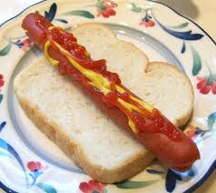

Hotdog

Description
Knock your tastebuds out of the ballpark with this classic take on an American classic. Is a hotdog a sandwich?
Ingredients
- Slice of bread. Sweezy's Tip: For best results don't use name brand bread, but the cheap kind that just says "Sandwich" on it.
- 1 Raw Hotdog
- Mustard
- Ketchup - If that is your thing.
Steps
- On a microwave-safe plate, place your raw hotdog down and poke holes in it with a fork.. Apparently this keeps it from exploding?
- Place prepared hotdog in the microwave and cook in increments of 25 seconds until it reaches desired hotness.
- Pull out plate and set to the side.
- Get a slice of bread, and lay the cooked hotdog on the piece of bread.
- Add your mustard and if you are weird go ahead and add ketchup.
- Feel free to add some Lay's Salt & Vinegar chips to your plate for an extra kick.